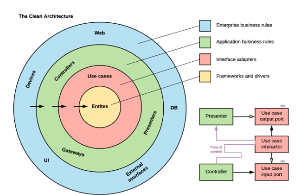
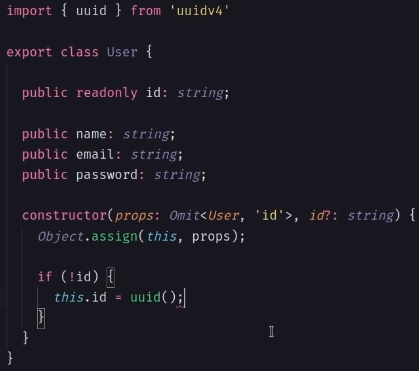

S.O.L.I.D
Aqui abaixo iremos descrever superficialmente em qual consiste cada um dos 5 pilares de SOLID.
-- S -- Single Responsability Principle Consiste em um príncipio que diz que uma classe, componente, entidade e até funcao deve ter apenas uma responsabilidade. Uma boa dica que temos para que possamos seguir o principio da responsabilidae única, é registrar o nome de funcoes/etc com o que ela está fazendo, por exemplo: registerUser. Caso tenhamos dificuldade em fazer isso, significa que talvez exista responsabilidade demais nessa funcao.


--O -- Open-Closed Principle Classes Entidades e Funcoes devem estar abertas para extensoes e fechadas para modificacoes.


-- L -- Liskov Substitution Principle Defende que se tivermos uma classe (classeA) e dela criarmos uma subclasse classe (ClasseB) utiliando herança, a subclasse (classeB) essa instancia tem que conseguir substituir o objeto da classe principal, sem quebrar a aplicação. Respeitar o principio de Liskov forca nossa aplicacao a ter as abstracoes em nivel correto e ser mais consistente. Um exemplo é a classe ave(), com os métodos bicar e voar. Dessa forma, ao criarmos o pica-pau, todos os métodos farã sentido pois ele pica e voa. Ao criarmos o pinguin, ele irá bicar porém irá enfrentar problemas ao voar. Então podemos concluir que a abstracao está feita de forma errada, e o principio sempre irá nos fazer pensar o que realmente a classe pai deve fornecer em comum a todas as outras subclasses.


-- I -- Interface Segregation Principle Diz que clientes (Classe) não devem ser forcados a depender/Implementar de métodos que eles nao usam. Isso acaba sendo reflexo de respeitar os tres primeiros principios porém especializados em interfaces.


-- D -- Dependency Inversion Principle A parte mais importante desse principio é que um módulo nao deve depender de detalhes de implementacao de outro módulo diretamente. Deve existir uma camada de abstracao (Interface) ali no meio.


RESUMO: Construir códigos utilizando a risca o conceito de SOLID nos permite criar códigos escaláveis, de fácil manutencao/refatoracao. Basicamente devemos criar códigos em que cada modulo possua sua responsabilidade única, que podem receber adicoes mas nunca alteracoes, sempre nos atentarmos com a Heranca e Interfaces, afinal, uma subclasse deve conseguir fazer TUDO o que a classe pai faz e também ao implementarmos um interface SEMPRE precisaremos utilizar todos os métodos, nunca podemos implementar uma interface e não usar algum método, pois isso significaria que a abstracao estaria errada. E também o principio de Inversão de Dependencias. Para trabalharmos com API'S utilizaremos fortemente o SingleResp, Liskov e Inversao Dep.
Estrutura Pastas&Funcionalidades:
Quando falamos em arquitetura limpa, partipos de um pilar que é apenas as camadas externas conhecem as camadas internas e NUNCA o contrário. Esse é o principal pilar para que comecemos a trabalhar. Arquitetura limpa é um padrão de arquitetura de códigos. Quando comecamos a estudar clean arch comumente iremos nos deparar com o termo DDD que precisamos ressaltar que são coisas diferentes.
A Arquitetura Limpa irá ditar como iremos modular e definir o padrão do nosso código, porém não estamos falando de uma tecnologia em específico. É um padrão. Esse padrão pode ser implementado e divido em todas as linguagens e em todos os frameworks, assim como em qualquer linguagem podemos aplicar os princípios do SOLID. É muito comum vermos sistemas com arquitetura limpa utilizando princípios do SOLID. Porém apesar de ser bem comum, não é uma regra, eles funcionam de forma "independente".
Antes de começarmos de fato a entender e a estruturar nossos próprios projetos utilizando arquitetura limpa, precisamos entender a fundo um dos princípios do solid, o D, que fala sobre a inversão de dependencias. A Inversão de Dependencias trás a ideia de que os nossos módulos devem depender de abstracoes e nao de implementacoes. O que isso significa ? Modulos separados nao devem ter dependencias direta entre eles. Por exemplo: Uma classe nao deve conhecer os métodos de implementacao de outra classe. Essa classe deve conhecer uma Interface, uma abstracao. Nossos módulos tem que depender de abstracoes e nao de implementacoes diretas.
A base da cleanArch é o desacoplamento. Para entendermos melhor, precisamos observar esas imagem abaixo:
Vamos entender essa Imagem: Cada círculo é uma camada da nossa aplicacao, sao os módulos, são as etapas que temos dentro do nosso software. As camadas mais internas não devem conhecer as implementações das camadas mais externas a ela. As camadas mais internas seriam o Core do nosso software, as nossas Entidades e as Regras de Negócio dele. É aqui que é ditado o que o nosso software irá fazer. Quanto mais externo for ficando as camadas, mais vai chegando a parte de ferramentas que é em como a aplicacao ira fazer isso. (Db, Devices, Web).
O usuário irá sempre interager com a camada mais externa da aplicacao. Ele irá conversar com a U.I, com a interface de comunicacao. (Se for uma API irá conversar com o Controller por exemplo). O CORE da nossa aplicacao jamais deverá ser dependente de servicos externos, nós não devemos mudar as regras para consumir servicos externos. Vamos ver o que encontraremos dentro dessas Camadas :
Camada Externa: Frameworks & Drivers O usuário/cliente se comunica com a camada mais externa. Essa camada normalmente é chamada de Infra. Banco de dados, UI, Serviços Terceiros… Interface Adapters - Essa camada faz a adaptação da camada mais externa para uma **interface** na qual a camada de casos de uso conhece. MVC - model, view, controller ficam aqui. A camada de casos de uso não deve conhecer a implementação da camada de infra. Essa camada da aplicação não depende diretamente da implementação de outra camada, ela apenas conhece uma abstração (um contrato) e faz uso desse contato. Use Cases / BusinessRules - Camada de casos de uso, contém as regras de negócio da nossa aplicação. Não conhece detalhes das camadas mais externas, só usa abstrações. Esses casos de uso orquestram o fluxo dos dados de/para as entidades e direcionam essas entidades para usar suas regras de negócios. Exemplo: Aplicativo de transferência de remessa internacional (Remessa Online ou Paypal). Exemplo De Regra: O cliente deve poder transferir um valor de seu saldo para outro cliente da plataforma. Entities - As **entidades são os objetos de negócios**. São as regras mais gerais e de mais alto nível do negócio. Elas são os menos propensos a mudar quando algo externo muda. Exemplo: Aplicativo de transferência de remessa (Remessa Online ou Paypal). O cliente deve conter um CNPJ, um número de conta no Brasil, e um saldo, sendo o CNPJ um identificador único de cada cliente
Dito isto, o principal objetivo da CleanArch é proteger a nossa regra de negócios de alteracoes externas. Conforme mais vamos para dentro das camdas , menos elas conhecem do software. Na entidade por exemplo, ela nao conhece nada do software, apenas depende de uma interface. Ela nao sabe qual framework, db será utilizado, nada disso.
Imagine um cenário: Imagine que não utilizemos clean arch, e dentro das nossas regras de negócio temos códigos SQL, ORM'S tudo junto. Imagine que por algum motivo sua empresa resolva trocar de banco, por qualquer motivo que seja, valor mais acessível por enquanto. Isso irá dar uma trabalheira considerável, baseado que teremos que praticamente mudar toda nossa aplicacao, mexer em todas as nossas classes.
Entities
Aqui é a parte mais interna da nossa camada. É a base de dados mais pura. Ela nao conhece nada da aplicacao além dela mesma. É uma classe onde irá conter seus Atributos. Para isso criamos uma pasta chamada Entities e dentro dela criamos suas classes, como por exemplo User.ts. Uma classe possui seus atributos, seu construtor, e seus possíveis métodos. Abaixo o exemplo de Classe: Obs: A linha que diz object.assing(this,props) está fazendo a mesma coisa que : this.name = name, this.obj = obj, e assim por diante.
useCases
Aqui é onde ficará localizado as regras de negócio da nossa aplicação. O que são regras de negócio. Aqui são todas as acoes que cada Entidade da nossa aplicação terá. Cada cado de uso é uma funcionalidade que uma entidade pode executar. De início temos a criacao de um usuário por exemplo. Para isso, iremos criar uma pasta chamada useCases, e dentro dela poderemos criar pastas com o nome das funcionalidades, como por exemplo: CreateUserUserCase, que de forma muito simples, ele terá um método, que receberá alguns dados e retornará alguns dados.
Repositories
Repositórios são classes específicas para que possamos fazer a comunicação entre as funcionalidades da aplicacao com o banco de dados.